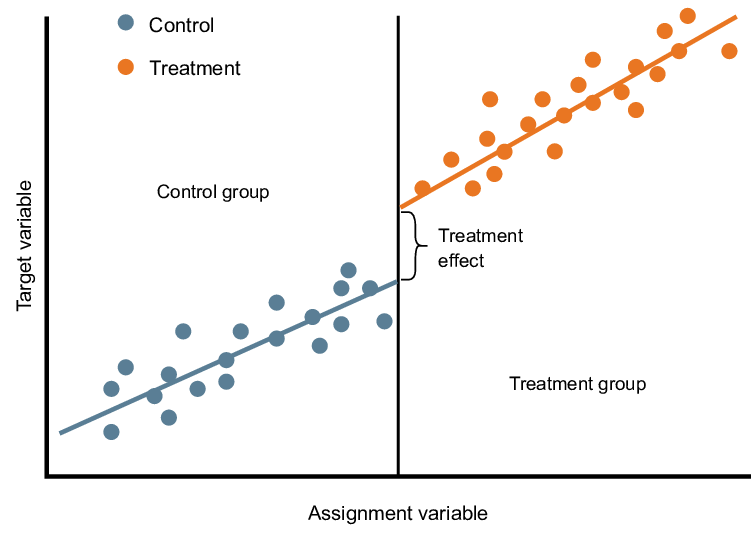

FACULTAD DE CIENCIAS SOCIALES - PUCP
Curso: SOC285 - Estadística para el análisis sociológico 2
Semestre 2025 - 1
El Diseño de Regresión Discontinua (RDD, por sus siglas en inglés) es una estrategia cuasi-experimental que permite evaluar el impacto causal de una política o intervención cuando la asignación a un tratamiento se basa en un umbral en una variable continua. La idea central es que los individuos justo por encima y por debajo de este umbral son muy similares en todo, excepto en que unos reciben el tratamiento y otros no, lo que permite estimar efectos causales de manera robusta, como si se tratara de un experimento natural.
El Diseño de Regresión Discontinua (RDD) se basa en la idea de que cuando una política, programa o tratamiento se asigna en función de un umbral en una variable continua (llamada running variable), los individuos justo por encima y por debajo de ese umbral son muy similares, excepto por el hecho de haber recibido o no el tratamiento. Esto nos permite estimar un efecto causal, como si tuviéramos un experimento natural.
Supongamos que un programa gubernamental otorga becas a estudiantes con un puntaje de examen mayor o igual a 70. Los estudiantes que obtienen 69 y 70 son muy parecidos en habilidades, pero solo los de 70 reciben la beca. Comparar el desempeño académico futuro de ambos grupos nos permite estimar el impacto causal de la beca sobre el rendimiento educativo.

Yùëñ‚Äã=Œ±+Œ≤ùê∑ùëñ‚Äã+ùëì(ùëãùëñ)+œµi
Donde:
Yùëñ‚Äã ​es la variable de resultado de inter√©s para el individuo ùëñ.
Œ± representa el valor esperado de la variable de resultado ùëå justo por debajo del umbral ùëê
ùê∑ùëñ‚Äã es la variable indicadora del tratamiento, donde ùê∑ùëñ=1 si ùëãùëñ supera el umbral y ùê∑ùëñ=0 en caso contrario.
ùëãùëñ es la variable de asignaci√≥n (o running variable), que determina la elegibilidad para el tratamiento.
ùëì(ùëãùëñ) es una funci√≥n flexible de la variable de asignaci√≥n que captura la tendencia de ùëåùëñ ​en ausencia del tratamiento (puede ser lineal, cuadrática o de orden superior).
ùúñùëñ ​es el t√©rmino de error.
ùõΩ es el parámetro clave de inter√©s, que mide el efecto causal del tratamiento en el umbral.​
En sociología, el RDD es valioso para evaluar el impacto de políticas públicas, programas sociales y regulaciones. Por ejemplo, podríamos analizar cómo una ley que establece un límite de edad para acceder a beneficios sociales afecta la calidad de vida de los beneficiarios. Al aprovechar decisiones administrativas que generan discontinuidades, los sociólogos pueden obtener inferencias causales en contextos donde los experimentos aleatorizados no son factibles.
| Característica | RDD | Diff-in-Diff |
| Asignación del tratamiento | Basada en un umbral (variable continua). | Basada en grupos (tratamiento vs. control). |
| Comparabilidad | Individuos cerca del umbral. | Grupos con tendencias paralelas. |
| Datos necesarios | Datos en un punto específico (cerca del umbral). | Datos longitudinales (antes y después). |
| Ejemplo de uso | Efecto de becas en estudiantes cerca del puntaje de corte. | Efecto de una política en una región vs. otra. |
En esta sesión se replicará el artículo de Rafael Lalive: “How do extended benefits affect unemployment duration? A regression discontinuity approach”. El autor buscar estudiar el efecto de un programa que extendió la duración de los beneficios del desempleo de 30 semanas a 209 semanas en Austria. El punto de corte para recibir estos beneficios era tener al menos 50 años y ser parte de las regiones elegibles.
De esta forma tenemos 2 umbrales: edad y zona geográfica. El autor decide quedarse con el segundo umbral como punto de corte porque las compañías podían esperar a que sus empleados cumplan los 50 años para darles de baja y así ellos puedan acceder al beneficio. En cambio, la zona geográfica era un aspecto no manipulable. El autor se enfocará en los individuos que viven cerca a la frontera entre las regiones tratadas y no tratadas.
library(rio)
library(tidyverse)## Warning: package 'stringr' was built under R version 4.4.3## ── Attaching core tidyverse packages ──────────────────────── tidyverse 2.0.0 ──
## ✔ dplyr 1.1.4 ✔ readr 2.1.5
## ✔ forcats 1.0.0 ✔ stringr 1.5.1
## ✔ ggplot2 3.5.1 ✔ tibble 3.2.1
## ✔ lubridate 1.9.3 ✔ tidyr 1.3.1
## ✔ purrr 1.0.2
## ── Conflicts ────────────────────────────────────────── tidyverse_conflicts() ──
## ✖ dplyr::filter() masks stats::filter()
## ✖ dplyr::lag() masks stats::lag()
## ℹ Use the conflicted package (<http://conflicted.r-lib.org/>) to force all conflicts to become errorsdata = import('releaseData.dta')c_1a = data %>%
filter(age %in% c(50:53) & female == 0 & period == 1 & tr == 1) %>%
summarise(total = n(),
promedio_edad = mean(age),
promedio_distancia = mean(db),
promedio_casado = mean(marr),
promedio_construccion = mean(bau)) %>%
mutate(tipo = "Región tratados 50-53 años",
sexo = "Hombre")
c_1b = data %>%
filter(age %in% c(50:53) & female == 1 & period == 1 & tr == 1) %>%
summarise(total = n(),
promedio_edad = mean(age),
promedio_distancia = mean(db),
promedio_casado = mean(marr),
promedio_construccion = mean(bau))%>%
mutate(tipo = "Región tratados 50-53 años",
sexo = "Mujer")c_2a= data %>%
filter(age %in% c(46:49) & female == 0 & period == 1 & tr == 1) %>%
summarise(total = n(),
promedio_edad = mean(age),
promedio_distancia = mean(db),
promedio_casado = mean(marr),
promedio_construccion = mean(bau))%>%
mutate(tipo = "Región tratados 46-49 años",
sexo = "Hombre")
c_2b=data %>%
filter(age %in% c(46:49) & female == 1 & period == 1 & tr == 1) %>%
summarise(total = n(),
promedio_edad = mean(age),
promedio_distancia = mean(db),
promedio_casado = mean(marr),
promedio_construccion = mean(bau))%>%
mutate(tipo = "Región tratados 46-49 años",
sexo = "Mujer")c_3a=data %>%
filter(age %in% c(50:53) & female == 0 & period == 1 & tr == 0) %>%
summarise(total = n(),
promedio_edad = mean(age),
promedio_distancia = mean(db),
promedio_casado = mean(marr),
promedio_construccion = mean(bau))%>%
mutate(tipo = "Región NO tratados 50-53 años",
sexo = "Hombre")
c_3b =data %>%
filter(age %in% c(50:53) & female == 1 & period == 1 & tr == 0) %>%
summarise(total = n(),
promedio_edad = mean(age),
promedio_distancia = mean(db),
promedio_casado = mean(marr),
promedio_construccion = mean(bau))%>%
mutate(tipo = "Región NO tratados 50-53 años",
sexo = "Mujer")rbind(c_1a,c_1b,c_2a,c_2b,c_3a,c_3b) %>%
gather(parametro,valor,-c("sexo","tipo")) %>%
arrange(sexo) %>%
mutate(valor = round(valor,2)) %>%
spread(tipo,valor) %>%
View()toPlot1 = data %>%
filter(female == 0 & tr == 1) %>%
mutate(color_age = ifelse(age>=50,1,0)) %>%
group_by(color_age,age) %>%
summarise(promedio = mean(unemployment_duration))## `summarise()` has grouped output by 'color_age'. You can override using the
## `.groups` argument.ggplot(toPlot1, aes(x = age, y = promedio, color =color_age )) +
geom_line()+
geom_point()+
geom_vline(xintercept = 50, colour = "red") +
labs(x = "Edad", y = "Semanas de desempleo") +
guides(color = FALSE)+
theme_bw()## Warning: The `<scale>` argument of `guides()` cannot be `FALSE`. Use "none" instead as
## of ggplot2 3.3.4.
## This warning is displayed once every 8 hours.
## Call `lifecycle::last_lifecycle_warnings()` to see where this warning was
## generated.toPlot2 = data %>%
filter(female == 1 & tr == 1) %>%
mutate(color_age = ifelse(age>=50,1,0)) %>%
group_by(color_age,age) %>%
summarise(promedio = mean(unemployment_duration))## `summarise()` has grouped output by 'color_age'. You can override using the
## `.groups` argument.ggplot(toPlot2, aes(x = age, y = promedio, color =color_age )) +
geom_line()+
geom_point()+
geom_vline(xintercept = 50, colour = "red") +
labs(x = "Edad", y = "Semanas de desempleo") +
guides(color = FALSE)+
theme_bw()toPlot3 <- data %>%
filter(age %in% c(50:53)) %>% # Filtrar edades entre 50 y 53
group_by(tr, female, age) %>% # Agrupar por tr, female y age
mutate(
tr = factor(tr, levels = c(0, 1), labels = c("Región no tratada", "Región tratada")), # Etiquetar tr
female = factor(female, levels = c(0, 1), labels = c("Hombre", "Mujer")) # Etiquetar female
) %>%
summarise(promedio = mean(unemployment_duration)) # Calcular el promedio de duración del desempleo## `summarise()` has grouped output by 'tr', 'female'. You can override using the
## `.groups` argument.# Crear el gráfico
ggplot(toPlot3, aes(x = age, y = promedio, group = tr, color = tr)) +
geom_line() + # Líneas
geom_point() + # Puntos
facet_wrap(~female) + # Dividir por sexo
labs(
x = "Edad",
y = "Semanas de desempleo",
color = "Región" # Cambiar el título de la leyenda de color
) +
theme_bw() # Usar un tema limpiodatos_regresion1 = data %>%
filter(female == 0 & period == 1 & tr == 1)
modelo_hombres1 = lm(unemployment_duration ~ as.factor(age50), data = datos_regresion1)
summary(modelo_hombres1)##
## Call:
## lm(formula = unemployment_duration ~ as.factor(age50), data = datos_regresion1)
##
## Residuals:
## Min 1Q Median 3Q Max
## -28.98 -20.72 -12.31 -3.12 506.34
##
## Coefficients:
## Estimate Std. Error t value Pr(>|t|)
## (Intercept) 14.5192 0.8224 17.66 <2e-16 ***
## as.factor(age50)1 14.6047 1.1761 12.42 <2e-16 ***
## ---
## Signif. codes: 0 '***' 0.001 '**' 0.01 '*' 0.05 '.' 0.1 ' ' 1
##
## Residual standard error: 58 on 9732 degrees of freedom
## Multiple R-squared: 0.0156, Adjusted R-squared: 0.0155
## F-statistic: 154.2 on 1 and 9732 DF, p-value: < 2.2e-16Incrementar los beneficios de desempleo hasta en 209 semanas prolongó la duración de desempleo en 14.6 semanas en promedio entre hombres de 50 a 53 años comparados a hombres entre 46-49 años de edad.
datos_regresion2 = data %>%
mutate(db_0 = ifelse(db>=0,1,0)) %>%
filter(female == 0 & period == 1 & age %in% c(50:53))
modelo_hombres2 = lm(unemployment_duration ~ db_0, data = datos_regresion2)
summary(modelo_hombres2)##
## Call:
## lm(formula = unemployment_duration ~ db_0, data = datos_regresion2)
##
## Residuals:
## Min 1Q Median 3Q Max
## -32.10 -20.56 -9.81 -1.97 492.17
##
## Coefficients:
## Estimate Std. Error t value Pr(>|t|)
## (Intercept) 12.517 2.099 5.962 3.24e-09 ***
## db_0 19.726 3.410 5.785 9.18e-09 ***
## ---
## Signif. codes: 0 '***' 0.001 '**' 0.01 '*' 0.05 '.' 0.1 ' ' 1
##
## Residual standard error: 58.06 on 1230 degrees of freedom
## Multiple R-squared: 0.02649, Adjusted R-squared: 0.0257
## F-statistic: 33.47 on 1 and 1230 DF, p-value: 9.176e-09En las regiones donde se incrementó los beneficios de desempleo hasta en 209 semanas, hubo un aumento promedio de 19.7 semanas de desempleo en hombres entre 50-53 años de edad.
datos_regresion3 = data %>%
filter(female == 1 & period == 1 & tr == 1)
modelo_mujeres1 = lm(unemployment_duration ~as.factor(age50), data = datos_regresion3)
summary(modelo_mujeres1)##
## Call:
## lm(formula = unemployment_duration ~ as.factor(age50), data = datos_regresion3)
##
## Residuals:
## Min 1Q Median 3Q Max
## -89.25 -60.54 -16.82 27.53 499.76
##
## Coefficients:
## Estimate Std. Error t value Pr(>|t|)
## (Intercept) 21.233 1.733 12.26 <2e-16 ***
## as.factor(age50)1 68.158 2.214 30.79 <2e-16 ***
## ---
## Signif. codes: 0 '***' 0.001 '**' 0.01 '*' 0.05 '.' 0.1 ' ' 1
##
## Residual standard error: 81.14 on 5657 degrees of freedom
## Multiple R-squared: 0.1435, Adjusted R-squared: 0.1434
## F-statistic: 947.8 on 1 and 5657 DF, p-value: < 2.2e-16Incrementar los beneficios de desempleo hasta en 209 semanas prolongó la duración de desempleo en 68.1 semanas en promedio entre mujeres de 50 a 53 años comparados a mujeres entre 46-49 años de edad.
datos_regresion4 = data %>%
mutate(db_0 = ifelse(db>=0,1,0)) %>%
filter(female == 1 & period == 1 & age %in% c(50:53))
modelo_mujeres4 = lm(unemployment_duration ~ db_0, data = datos_regresion4)
summary(modelo_mujeres4)##
## Call:
## lm(formula = unemployment_duration ~ db_0, data = datos_regresion4)
##
## Residuals:
## Min 1Q Median 3Q Max
## -112.13 -30.42 -12.75 31.00 500.41
##
## Coefficients:
## Estimate Std. Error t value Pr(>|t|)
## (Intercept) 30.562 4.837 6.319 4.69e-10 ***
## db_0 81.714 6.617 12.349 < 2e-16 ***
## ---
## Signif. codes: 0 '***' 0.001 '**' 0.01 '*' 0.05 '.' 0.1 ' ' 1
##
## Residual standard error: 87.33 on 698 degrees of freedom
## Multiple R-squared: 0.1793, Adjusted R-squared: 0.1781
## F-statistic: 152.5 on 1 and 698 DF, p-value: < 2.2e-16En las regiones donde se incrementó los beneficios de desempleo hasta en 209 semanas, hubo un aumento promedio de 81.7 semanas de desempleo en mujeres entre 50-53 años de edad.